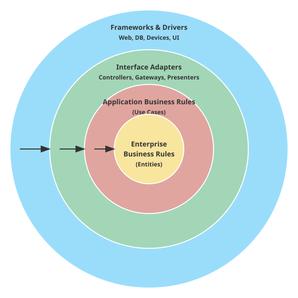

オブジェクト指向で「魔力の源」を知り、UMLで「魔法陣」を描き、SOLID原則とデザインパターンで「美しい構造」を学びました。しかし、あなたの作ったシステムは、外の世界の嵐（変化）に耐えられるでしょうか？
こうした外側の変化のたびに、大切なビジネスロジック（クエストの計算式やレベルアップのルール）まで書き換える必要があったら、冒険はいつまでたっても進みません。
本当に大切な「魂（ドメインロジック）」を守るために、堅牢な城壁を築く必要があります。それがクリーンアーキテクチャです。

クリーンアーキテクチャは、システムを同心円状の階層（レイヤー）に分ける考え方です。
中心に行けば行くほど「重要で変化しにくいもの」、外側に行けば行くほど「詳細で変化しやすいもの」を配置します。
ビジネスの核心となるルールです。QuestForgeで言えば、「経験値が溜まればレベルが上がる」といった、ゲーム自体のルールです。データベースやUIが何であれ、このルールは変わりません。
ユーザーがシステムを使って達成したいこと（ユースケース）です。「クエストを作成する」「報酬を受け取る」といった処理の流れを記述します。
内側のデータを、外側（DBやUI）が使いやすい形に変換する翻訳者たちです。ControllerやPresenter、Gatewayがここにいます。
Webフレームワーク、データベース、外部APIなど。これらはあくまで「道具」であり、いつでも取り替え可能な状態にしておきます。
[図: 依存方向のルール（内向きの矢印）]
この城にはたった一つ、絶対の掟があります。
「依存の矢印は、常に外側から内側へ向かわなければならない」
外側（DBやUI）は内側（ドメイン）を知っていますが、内側は外側のことを一切知りません。王様（ドメイン）は、城下町（DB）の流行り廃りに影響されないのです。
クリーンアーキテクチャは強力な「守り」ですが、一つだけ心がけておきたいポイントがあります。それは、オーバーエンジニアリング（過剰設計）です。
小さな小屋を建てるだけなのに、何十メートルもの石造りの城壁（何層もの抽象化レイヤー）を築くのは、かえって時間と労力の無駄になり、身動きが取れなくなってしまいます。
ここで、アルケミストが心得ておくべき2つの「自戒の呪文」を紹介します。
クリーンアーキテクチャという「堅牢な城」を築くべきか、あるいは今はまだ「身軽なキャンプ」で済ませるべきか。そのトレードオフ（利害のバランス）を見極めることこそが、真のエンジニアリングの醍醐味です。
QuestForgeのディレクトリ構造は、この思想を反映しています。
questforge/
├── domain/ # [本丸] エンティティ、リポジトリのインターフェース
│ ├── hero.py # Heroクラス（純粋なPythonコード）
│ └── i_repo.py # IHeroRepository（インターフェース）
│
├── application/ # [内郭] ユースケース
│ └── level_up.py # LevelUpUseCase
│
├── infrastructure/ # [城下町] 詳細な実装
│ └── db_repo.py # SqliteHeroRepository（IHeroRepositoryの実装）
│
└── presentation/ # [城下町] UI
└── cli.py # コマンドライン操作ここで重要なのが、2.3節で学んだ「依存性逆転の原則（DIP）」です。
初期の状態（内側が外側に依存）: ```python # application/level_up.py from infrastructure.db_repo import SqliteRepo # ❌ 外側の詳細に依存している！
def level_up(hero_id): repo = SqliteRepo() # DBが変わったらここも修正が必要 hero = repo.find(hero_id) ```
さらに効果的な方法（外側が内側に依存）: ```python # application/level_up.py from domain.i_repo import IHeroRepository # ⭕ 内側のインターフェースに依存
def level_up(hero_id, repo: IHeroRepository): # repoがSqliteかJsonかは知らなくていい hero = repo.find(hero_id) ```
こうすることで、infrastructure フォルダを丸ごと削除しても、domain と application のコードは1行も書き換えずに済みます。これが「守られている」状態です。
レイヤーを分けると、どうしても似たようなクラスや変換処理（ボイラープレートコード）が増えます。これを手で書くのは退屈ですが、AIにとっては得意分野です。
「Heroエンティティを基に、Repositoryインターフェース、ユースケース、そしてSQLite用の実装クラスの雛形を一括生成して」と詠唱すれば、AIは城の骨組みを一瞬で築き上げます。
「このプロジェクトの中で、内側のレイヤーから外側のレイヤーをimportしている箇所はないかチェックして」とAIに依頼することで、城壁のほころび（アーキテクチャ違反）を早期に発見できます。
自分のプロジェクトフォルダに domain, application, infrastructure という3つのディレクトリを作成しましょう。
domain フォルダに、外部ライブラリ（SQLAlchemyやDjangoなど）を一切使わない、純粋なPythonクラスを作成してください。これが守るべき宝です。
domain フォルダに、データの保存や取得に必要なメソッドを定義した「抽象クラス（インターフェース）」を作成しましょう。実装はまだ書きません。
クリーンアーキテクチャは「城の守り方（構造）」を教えてくれますが、「城の中で誰がどのように暮らすか（ドメインモデルの中身）」を決定するのは、あなたの思想です。ここで役立つのが、ドメイン駆動設計（Domain-Driven Design: DDD）の知恵です。
「アーキテクチャ」が城壁なら、「DDD」はその中で共通の言葉を話し、秩序を守るための「王国の法律」のようなものです。特に重要な3つの概念を、冒険の比喩で紐解いてみましょう。
開発者と、ビジネスの専門家（ドメインエキスパート）が使う言葉がバラバラだと、悲劇が起きます。
専門家が「冒険者の称号を授与する」と言っているのに、コードが update_user_status(3) となっていたらどうでしょう？ 修正のたびに「status(3)って称号のことだっけ？」という脳内翻訳が必要になり、いつか必ずミスが起きます。
DDDでは、会話でも、仕様書でも、そしてソースコードの変数名やメソッド名でも、全く同じ言葉（ユビキタス言語）を使います。
hero.grant_title("Dragon Slayer") と書けば、誰が読んでも意図が一目でわかります。言葉の壁を取り払うことで、魔法（プログラム）の暴走を防ぐのです。
同じ「ヒーロー」という言葉でも、場所が変われば意味が変わります。
これらを無理に一つの巨大な Hero クラスにまとめようとすると、あらゆるデータが混ざり合い、複雑すぎて手がつけられない「キメラ」が生まれてしまいます。
領土（コンテキスト）ごとに境界を引き、「ここではヒーローは戦士として扱う」「あちらでは登録者として扱う」と割り切ることで、モデルをシンプルに保つのです。
システムの中には、バラバラに操作してはいけない「運命共同体」が存在します。 例えば、「クエスト」とその「達成条件（タスク）」です。クエスト本体を知らずに、勝手にタスクだけを「完了」にできてしまったら、クエスト全体の整合性が崩れてしまいます。
これを防ぐのが「集約」です。クエストとタスクを一つのグループ（集約）とし、外部からの操作は必ずグループのリーダー（集約ルート）である「クエスト」を通すように制限します。これにより、「タスクが全部終わっていないのにクエストが完了扱いになる」といった矛盾した状態を防ぐ、強力な防壁となるのです。
城壁（アーキテクチャ）を作ったら、その中にはこれらの法律を敷き、豊かで秩序ある王国（ドメインモデル）を築いていきましょう。
ここで一つ、アルケミストが心に留めておくべき概念があります——技術的負債（Technical Debt）です。
技術的負債とは、「今は楽だが、後で利子（追加の作業）を払うことになる設計上の妥協」のことです。締め切りに追われて「とりあえず動く」コードを書いたり、本来分離すべきレイヤーを混ぜてしまったりすると、負債は静かに積み上がります。
負債そのものは必ずしも悪ではありません。冒険には時に「今を乗り切るための借金」が必要なこともあります。大切なのは、負債の存在を認識し、計画的に返済していくことです。
技術的負債を見つけ出し、美しく返済していく技術——それがリファクタリングです。この魔法については、第5章「リファクタリング：彫刻を磨く喜び」で詳しく学びます。
これで第2章「悠久のアーキテクチャ」の旅は終わりです。 オブジェクト指向から始まり、UML、SOLID、デザインパターンを経て、最後にそれらを統合するクリーンアーキテクチャに到達しました。
あなたの手には今、堅牢で美しい城を築くための設計図があります。 次章からは、いよいよこの城に命を吹き込む「実装」の旅——第3章：モダン・アルケミー（AI駆動実装）が始まります。
以下のドメインオブジェクト（Heroクラス）に対して、クリーンアーキテクチャに基づいた
1. リポジトリインターフェース
2. ヒーローを作成するユースケース
3. インメモリで動作するリポジトリの実装
のPythonコードを生成してください。このPythonプロジェクトのディレクトリ構造を解析し、Clean Architectureの「依存性のルール（外側から内側へのみ依存）」に違反しているimport文があれば指摘してください。